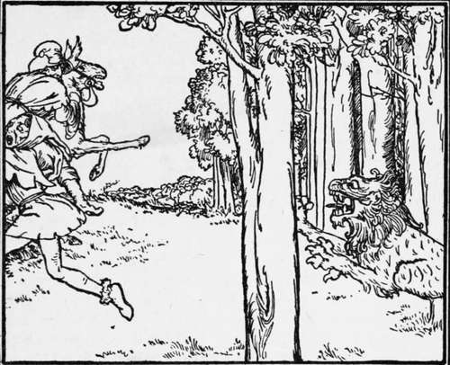
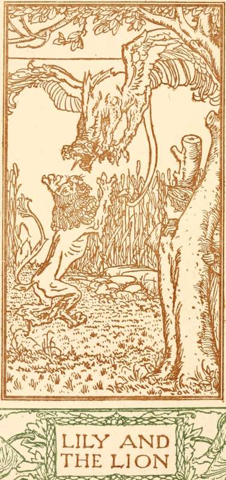

Lily And The Lion
Description
This section is from the book "Household Tales by Brothers Grimm", by Brothers Grimm. Also available from Amazon: Household Tales by Brothers Grimm.
Lily And The Lion
A merchant, who had three daughters, was once setting out upon a journey; but before he went he asked each daughter what gift he should bring back for her. The eldest wished for pearls; the second for jewels; but the third, who was called Lily, said, "Dear father, bring me a rose." Now it was no easy task to find a rose, for it was the middle of winter; yet as she was his prettiest daughter, and was very fond of flowers, her father said he would try what he could do. So he kissed all three, and bid them good-bye.
And when the time came for him to go home, he had bought pearls and jewels for the two eldest, but he had sought everywhere in vain for the rose; and when he went into any garden and asked for such a thing, the people laughed at him, and asked him whether he thought roses grew in snow. This grieved him very much, for Lily was his dearest child ; and as he was journeying home, thinking what he should bring her, he came to a fine castle; and around the castle was a garden, in one half of which it seemed to be summer time, and in the other half winter. On one side the finest flowers were in full bloom, and on the other everything looked dreary and buried in the snow. "A lucky hit!" said he, as he called to his servant, and told him to go to a beautiful bed of roses that was there, and bring him away one of the finest flowers.
This done, they were riding away well pleased, when up sprang a fierce lion, and roared out, " Whoever has stolen my roses shall be eaten up alive ! " Then the man said, " I knew not that the garden belonged to you; can nothing save my life?" "No!" said the lion, "nothing, unless you undertake to give me whatever meets you first on your return home: if you agree to this, I will give you your life, and the rose too for your daughter." But the man was unwilling to do so and said, "It may be my youngest daughter, who loves me most, and always runs to meet me when I go home." Then the servant was greatly frightened, and said, " It may perhaps be only a cat or a dog." And at last the man yielded with a heavy heart, and took the rose ; and said he would give the lion whatever should meet him first on his return.
And as he came near home, it was Lily, his youngest and dearest daughter, that met him; she came running, and kissed him, and welcomed him home; and when she saw that he had brought her the rose, she was still more glad. But her father began to be very sorrowful, and to weep, saying, "Alas, my dearest child! I have bought this flower at a high price, for I have said I would give you to a wild lion; and when he has you, he will tear you in pieces, and eat you." Then he told her all that had happened, and said she should not go, let what would happen.
But she comforted him, and said, "Dear father, the word you have given must be kept; I will go to the lion, and soothe him: perhaps he will let me come safe home again."
The next morning she asked the way she was to go, and took leave of her father, and went forth with a bold heart into the wood. But the lion was an enchanted prince. By day he and all his court were lions, but in the evening they took their right forms again. And when Lily came to the castle, he welcomed her so courteously that she agreed to marry him. The wedding-feast was held, and they lived happily together a long time. The prince was only to be seen as soon as evening came, and then he held his court; but every morning he left his bride, and went away by himself, she knew not whither, till the night came again.
"After some time he said to her, "To-morrow there will be a great feast in your father's house, for your eldest sister is to be married; and if you wish to go and visit her my lions shall lead you thither." Then she rejoiced much at the thoughts of seeing her father once more, and set out with the lions; and every one was overjoyed to see her, for they had thought her dead long since. But she told them how happy she was, and stayed till the feast was over, and then went back to the wood.
Her second sister was soon after married, and when Lily was asked to the wedding, she said to the prince, " I will not go alone this time—you must go with me." But he would not, and said that it would be a very hazardous thing; for if the least ray of the torch-light should fall upon him his enchantment would become still worse, for he should be changed into a dove, and be forced to wander about the world for seven long years. However she gave him no rest, and said she would take care no light should fall upon him. So at last they set out together, and took with them their little child; and she chose a large hall with thick walls for him to sit in while the wedding-torches were lighted; but, unluckily, no one saw that there was a crack in the door. Then the wedding was held with great pomp, but as the train came from the church, and passed with the torches before the hall, a very small ray of light fell upon the prince. In a moment he disappeared, and when his wife came in and looked for him, she found only a white dove; and it said to her, "Seven years must I fly up and down over the face of the earth, but every now and then I will let fall a white feather, that will show you the way I am going; follow it, and at last you may overtake and set me free."
This said, he flew out at the door, and poor Lily followed; and every now and then a white feather fell, and showed her the way she was to journey. Thus she went roving on through the wide world, and looked neither to the right hand nor to the left, nor took any rest, for seven years. Then she began to be glad, and thought to herself that the time was fast coming when all her troubles should end; yet repose was still far off", for one day as she was travelling on she missed the white feather, and when she lifted up her eyes she could nowhere see the dove. " Now," thought she to herself, " no aid of man can be of use to me." So she went to the sun and said, "Thou shinest everywhere, on the hill's top and the valley's depth—hast thou anywhere seen my white dove?" " No," said the sun, " I have not seen it; but I will give thee a casket—open it when thy hour of need comes."
Continue to:
Tags
fairy tales, children's stories, brothers grimm, household tales